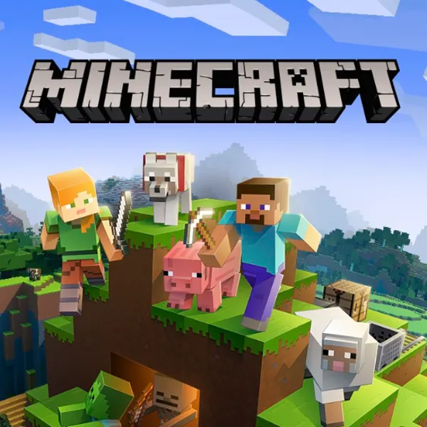
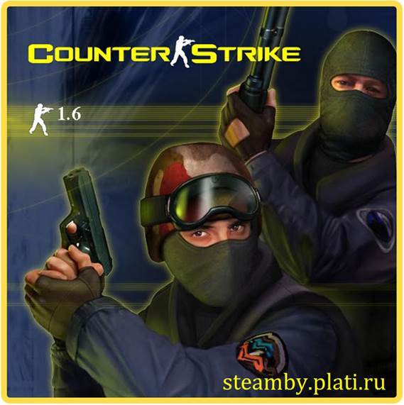

Компютърните игри
Компютърната игра е видеоигра, която се играе предимно на персонален компютър. Играта, сама по себе си, предполага участието на поне един играч, който може да влияе на средата, в която е поставен. Компютърните игри се създават от специализирани софтуерни компании, често в сътрудничество с различни специалисти и се публикуват самостоятелно или чрез външна фирма. Разпространяват се на твърди носители, като DVD-та или CD-та, свалят се от интернет за изпробване или се използват специализирани онлайн услуги за доставка. Вижте трите най-популярни игри.
|  |  |
 |
| Minecraft | Need for speed | Counter strike |
В света на игрите